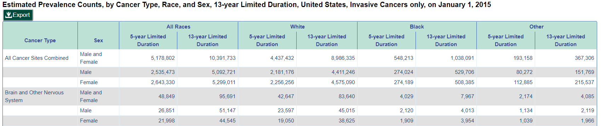
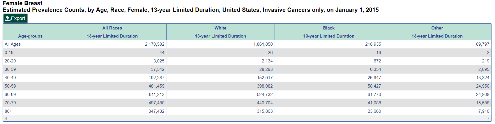

The link to my data can be found on this website:
The link above connects to the CDC website for data on all kinds of cancer. The data I would like to use is on the third chart on the page, entitled "All Types of Cancer - Estimated Prevalence Counts, by Cancer Type, Race, and Sex, 5-year Limited Duration, United States, Invasive Cancers only, on January 1, 2015". This chart can be downloaded in .csv format (which I have done already) by clicking the "Export" button above the graph. The start of this chart should look like this:
However, if this dataset proves too difficult to work with, I have found a second set of data that is more specific to my cause that I would also love to work with. If you select the drop-down menu on the page provided above and choose "Female Breast" then "14-Year Limited Duration", the first chart on that page is smaller, easier to work with and specific to my cause of my mother. This chart can also be downloaded in .csv format and should look like this:
My father was diagnosed with prostate cancer in 2003 and my mother with breast cancer in 2004. My parents have been HUGE role models for me in my life and a lot of my academic drive comes from wanting to make them proud. However, they have had to overcome a lot of adversity in their lives, most of which has been caused by cancer. My family dealt with two kinds of cancer at that time and for a second time in 2010. My family has also had experience with pancreatic and lung cancers, so I find this data extremely relevant to my life. What I want to accomplish with my data is to show the widespread nature of cancer in the United States and in the world today and get the message across that everyone needs to be tested. While it seems like a very dark and depressing topic to choose, I really want it to be considered informative and insightful. Cancer research is improving every day but treatment doesn't start until people are tested and diagnosed. At our college age, this is not our concern right now, but in a few years it could be. Preferably, I'd want to use the larger data set to communicate more about all kinds of cancer, but if not, I would still be able to produce an effective visualization with the breast cancer dataset.